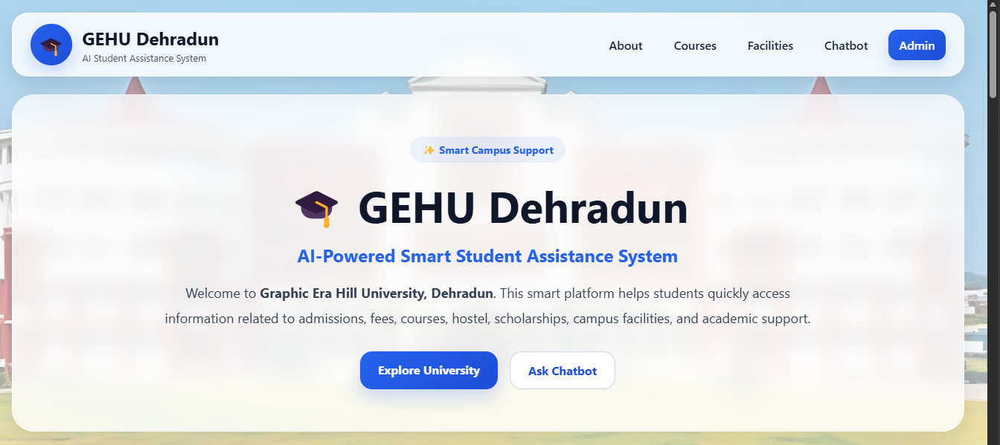
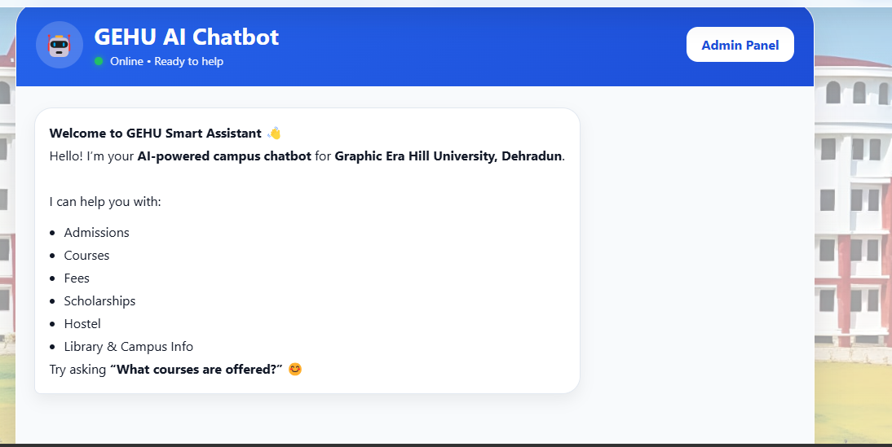
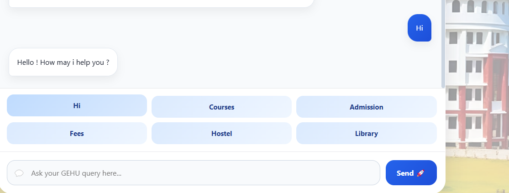
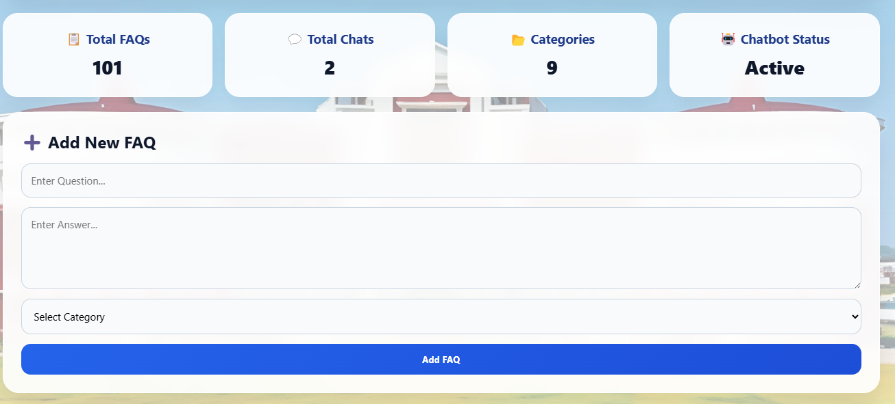
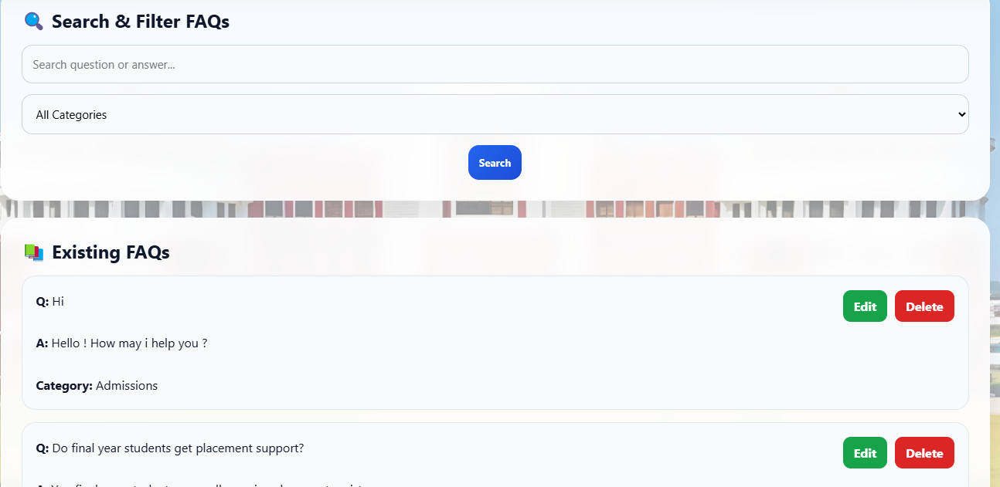
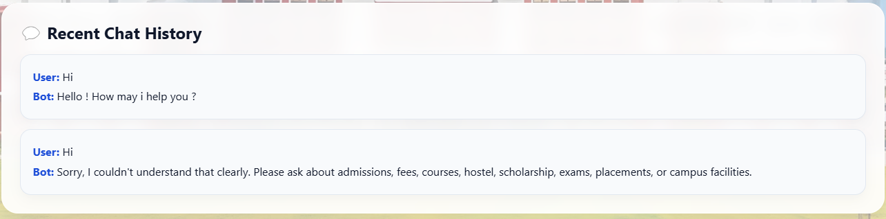

University Chatbot
An AI-powered conversational application designed to help students quickly access university-related information.
Project Overview
The University Chatbot is an AI-powered conversational application designed to provide students with quick and accessible information about their university.
Instead of manually searching through different sources, students can interact with the chatbot through a simple conversational interface and ask questions in natural language.
The project focuses on creating a convenient digital assistant that can respond to common college-related queries and make information easier to access.
Objective
The main objective of the University Chatbot is to simplify the process of finding university-related information.
The system provides students with an interactive way to ask questions and receive relevant responses while demonstrating how artificial intelligence and conversational interfaces can be used in an educational environment.
Key Features
- Interactive conversational interface
- Natural-language question answering
- College-related information retrieval
- Simple and user-friendly interface
- Fast responses to common queries
- Student-focused information access
How It Works
The user enters a question through the chatbot interface. The system processes the user's input and identifies the relevant information required to answer the query.
The chatbot then generates or retrieves an appropriate response and displays it within the conversation interface.
This creates a simple question-and-answer experience similar to interacting with a virtual college assistant.
AI & Natural Language Processing
Artificial intelligence and natural language processing are used to make the chatbot capable of understanding user questions in a conversational format.
Instead of requiring users to search for exact keywords, the chatbot is designed to process natural-language questions and provide relevant information.
Technologies Used
Project Workflow
Project Output
The following screenshots demonstrate the chatbot interface and its conversational functionality.






Project Outcome
The project demonstrates the practical use of AI and conversational interfaces in an educational environment.
It provides a foundation for developing more advanced college assistants that could support admission information, course details, campus services, academic FAQs, and student support.
Future Improvements
Future versions could include voice interaction, multilingual support, integration with college databases, personalized student assistance, improved natural language understanding, and more advanced AI-based question answering.
← All Projects